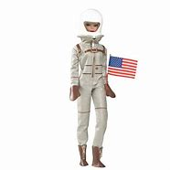
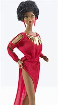
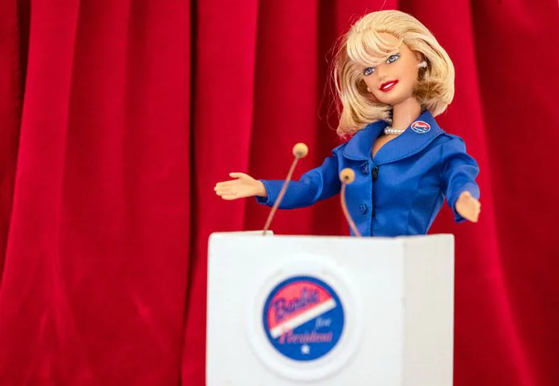
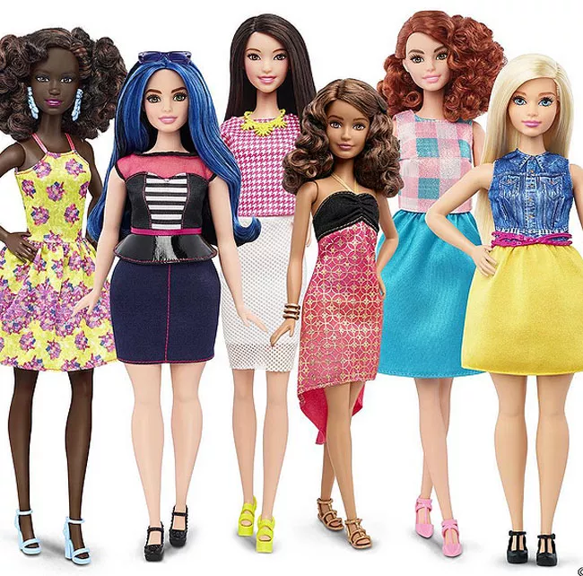
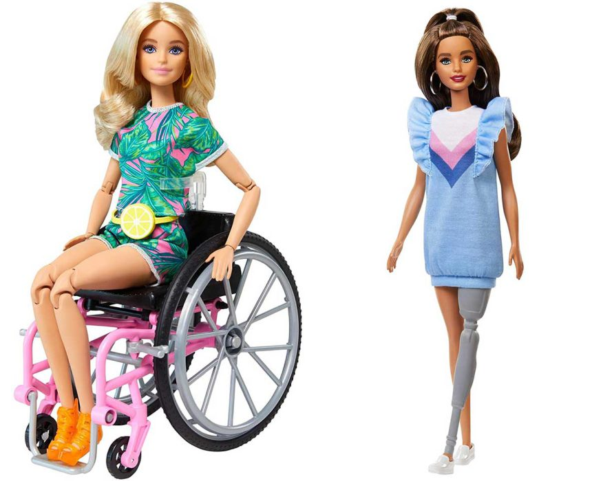
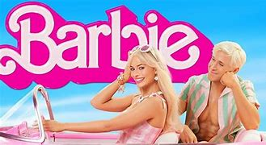
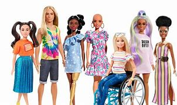

Historia de Barbie
1959: El Nacimiento de Barbie

Ruth Handler, co-fundadora de Mattel, creó la primera Barbie después de observar a su hija Barbara jugando con muñecas de papel. La muñeca fue presentada en la Feria del Juguete de Nueva York el 9 de marzo de 1959. Barbie llevaba un traje de baño rayado en blanco y negro, tenía ojos delineados y cabello rubio recogido en una cola de caballo. Su nombre completo era Barbara Millicent Roberts.
1961: Ken hace su aparición
Ken, el novio de Barbie, fue introducido en 1961 y nombrado así por el hijo de Ruth Handler, Kenneth. La pareja se convertiría en un dúo icónico en el mundo de los juguetes.
1965: Barbie astronauta
Cuatro años antes de que el hombre pisara la luna, Barbie ya era astronauta, inspirando a niñas a soñar con las estrellas en una época donde las mujeres rara vez eran consideradas para estas profesiones.
1980: Primera Barbie afroamericana
Mattel lanza la primera Barbie afroamericana, marcando un paso importante hacia la diversidad en la línea de muñecas.
1992: Barbie presidenta
Barbie se postula para presidenta por primera vez, décadas antes de que una mujer fuera nominada por un partido principal en los EE.UU.
2016: Nuevos cuerpos y tonos de piel
Mattel revoluciona la línea con la introducción de cuerpos curvy, petite y tall, además de múltiples tonos de piel y tipos de cabello, representando mejor la diversidad real.
2019: Barbie Fashionistas con discapacidades
Se introducen Barbies con diferentes discapacidades, incluyendo una Barbie en silla de ruedas y otra con prótesis de pierna, continuando el compromiso con la inclusión.
2023: Película "Barbie"
La película "Barbie" dirigida por Greta Gerwig y protagonizada por Margot Robbie se convierte en un fenómeno cultural global, reflexionando sobre el legado e impacto de la muñeca en la sociedad.
La Evolución de Barbie
Curiosidades fascinantes sobre Barbie
- Ventas impresionantes: Se vende más de una Barbie cada segundo en algún lugar del mundo. Desde su creación, se han vendido más de mil millones de muñecas Barbie.
- Nombre completo: El nombre completo de Barbie es Barbara Millicent Roberts y, según la historia oficial, nació en Willows, Wisconsin.
- Más de 200 carreras: A lo largo de su historia, Barbie ha tenido más de 200 carreras diferentes, desde astronauta y doctora hasta presidenta y diseñadora de videojuegos.
- La Barbie más cara: La Barbie más cara jamás vendida fue una diseñada por el joyero australiano Stefano Canturi, que incluía un collar con un diamante rosa real y se vendió por $302,500 dólares en una subasta benéfica.
- Inspiración europea: Barbie fue inspirada por una muñeca alemana llamada Bild Lilli, que Ruth Handler vio durante un viaje a Europa. Originalmente, Lilli era un personaje de caricatura para adultos.
- Familia de Barbie: Barbie tiene tres hermanas: Skipper (1964), Stacie (1992) y Chelsea (anteriormente Kelly, 1995). También tuvo un hermano llamado Todd que fue descontinuado.
- Barbie y los astronautas: Barbie se convirtió en astronauta en 1965, cuatro años antes de que Neil Armstrong pisara la Luna. ¡Ha sido astronauta varias veces a lo largo de su historia!
- Muñeca pionera: En 1974, cuando las carreras quirúrgicas eran casi exclusivamente masculinas, Barbie ya era cirujana.
El Impacto Cultural de Barbie
Más allá de ser un juguete, Barbie ha influido en la moda, el arte, el cine y las conversaciones sobre roles de género durante más de seis décadas. Ha sido tanto celebrada como criticada, generando importantes debates sobre los estándares de belleza, la imagen corporal y las aspiraciones profesionales de las mujeres.
A través de su evolución, ha reflejado los cambios sociales y ha trabajado para adaptarse a un mundo más diverso e inclusivo. En 2023, la película "Barbie" dirigida por Greta Gerwig exploró estos temas con profundidad, generando nuevas conversaciones sobre el legado e impacto de esta icónica muñeca.
Para muchas generaciones, Barbie representó una forma de explorar diferentes carreras y posibilidades, mostrando a las niñas que podían aspirar a ser lo que quisieran. Aunque ha recibido críticas por promover estándares de belleza poco realistas, Mattel ha trabajado en los últimos años para hacer que la línea sea más inclusiva y representativa de la diversidad humana.